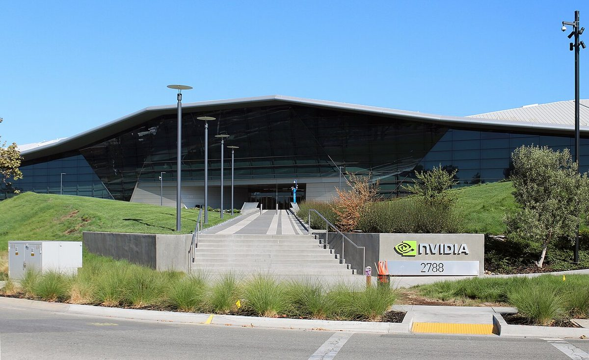

"Save Jensen": builders line up behind Huang as Nvidia's board meets
A Wall Street Journal report that the board was preparing to oust its founder sent the stock down and set off a rare chorus from tech leaders, most arguing the company would hurt itself and the country by acting in haste.
What happened Nvidia's board and the reports
The crisis began Sunday, after reports that US intelligence believes Alice Huang, a Megaspeed executive with whom the CEO had a relationship, helped arrange shipments of Nvidia chips to Chinese companies. Huang told employees in a memo that he had been unfaithful to his wife and took full responsibility, and the board said then it had confidence in him. On Wednesday the New York Times reported a second relationship, with an executive who reported to him, and the Wall Street Journal reported at 5:44pm EST that the board was "preparing to oust CEO Jensen Huang."
Reuters reported that the board met Wednesday to decide. Under Nvidia's bylaws a majority of its 11 directors can remove the CEO "with or without cause," and all but Huang are independent. Huang, 63, owns about 3.6% of the company and has no obvious successor. Semafor reported that some directors favor Chief Financial Officer Colette Kress as interim CEO, that Apple hardware chief Johny Srouji is among those considered, and that the board briefed the White House. Bernstein and Oppenheimer downgraded the stock.



Tim Sweeney @TimSweeneyEpic · CEO, Epic Games
Sweeney quoted the Journal's report within four hours:
"Save Jensen. This would be an Apple firing Steve Jobs level of idiocy from NVIDIA’s board if they did that, and a grievous harm to the United States of America. The dude truly is the visionary driver of the future of tech from the gaming GPU era to CUDA to AI supercomputers."
In a thread he traced Huang's record from "beating 3dfx" with the Riva TNT to programmable GPUs, CUDA and "now AI supercomputers," and compared HP and SGI, which "wasted it away with extraction, while NVIDIA consistently accepted lower margins in exchange for ubiquity." When Wall St Engine relayed the Semafor report on Kress, he replied at 12:32am EST: "Wow what a ridiculous shitshow it would be to replace one of the leading technology visionaries of the modern era with the company’s money guy." He also questioned the Journal's anonymous sourcing.
Palmer Luckey @PalmerLuckey · founder, Anduril
Luckey's view, posted at 1:47am EST, drew more than 20,000 likes in a few hours:
"China wants Jensen out, so I want him in."
David Heinemeier Hansson @dhh · creator of Ruby on Rails and Omarchy
Heinemeier Hansson wrote at 3:52am EST: "NVIDIA would be wrong to fire Jensen. His marital indiscretions are between him, his wife, and a reprimand from the board. Have some proportionality."
Suhail Doshi @Suhail · CEO, Playground
Doshi proposed a cooling-off period:
"There should be a rule on boards that you do not make any moves on CEO for 2 weeks after a PR crisis (excluding criminal acts). Boards are often compelled to make decisions under public pressure but once that subsides there's a great clarity about what to do."
When a reply argued that directors act out of personal liability, citing a hypothetical Lockheed suspension, he answered: "1. D&O insurance 2. That's why you make it a governance rule for the board."
Elon Musk @elonmusk · CEO, SpaceX and Tesla
Investor Gavin Baker argued the board should wait for its investigation "and/or have a shareholder vote after the investigation is complete," noting the 8% after-hours fall. Musk replied "Exactly" at 8:51pm EST, and agreed with Baker's follow-up that callers should press "people who can impact the decision." When Zero Hedge posted "Elon please hire Jensen," Musk answered at 8:22pm EST: "That would be an honor." It was his most-liked post of the day.

.jpg){kind=link}